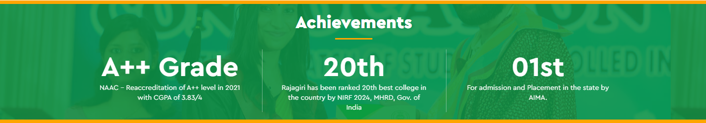

Rajagiri College Of Social Sciences

Rajagiri College of Social Sciences (RCSS), together with its sister educational concerns, owes its existence to the CMI (Carmelites of Mary Immaculate) fathers, the first ever indigenous religious congregation for men in the Syrian Catholic tradition of Christianity in India. The CMIs drawing inspiration from their founding father St. Kuriakose Elias Chavara, a great visionary, reformer and religious leader of the 19th century, have proven themselves worthy of that heritage in the field of education by establishing institutions of excellence imparting quality education, across the length and breadth of the State, and in various parts of India. At present, the CMIs manage a network of more than 800 Schools, 13 Special Schools, 41 Arts, Science, Commerce & Physical Education Colleges, 10 B.Ed. Colleges, 4 Nursing Colleges, 4 Engineering Colleges, one Medical College, one University, 3 Law Colleges, 6 Research Centres, 7 Technical Institutes, 41 Hostels & Boarding Houses, 17 Cultural Centres, 2 Super Speciality Hospitals and 114 Non-formal Education Centres.
Welcome to the Rajagiri Research and Development Cell (RRDC) the Research Hub of Rajagiri College, where knowledge meets innovation! The Rajagiri Research and Development Centre (RRDC) strives to bring together research, innovation, and technology development in order to realise the vision of Atma Nirbhar Bharat. RRDC is focused on creating a research ecosystem that aligns with the NEP 2020. RRDC's reliable and impactful research output is attributed to its Research Information Management System and financial support from various sources.